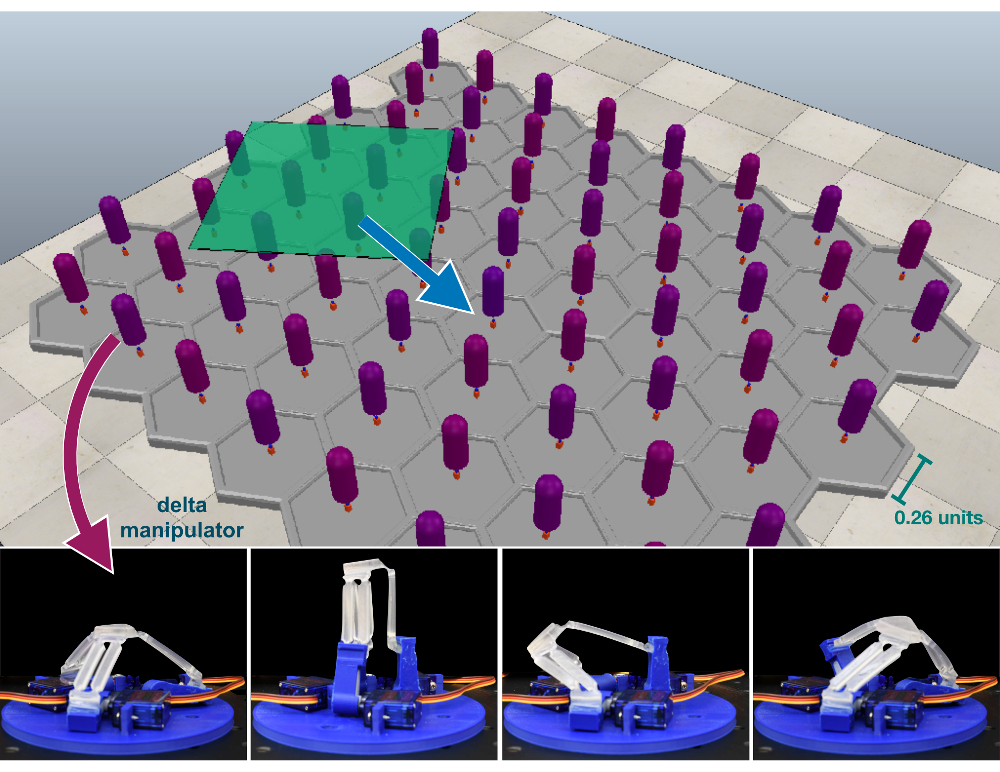
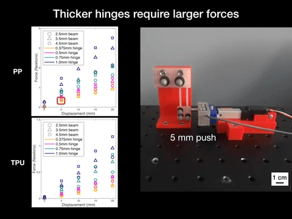

Pragna is passionate about creating robot hands that can generalize to everyday tasks and objects. She did her Robotics PhD at Carnegie Mellon University with Professors Nancy Pollard and Jean Oh, specializing in designing and controlling soft robotic hands.
Pragna has won Best Demo Finalist and Best Oral Paper Finalist Awards at IEEE-RAS International Conference on Soft Robotics (RoboSoft) 2024 and IEEE-RAS International Conference on Humanoid Robots (Humanoids) 2023.
Designing Anthropomorphic Soft Hands through Interaction Pragna Mannam, Kenneth Shaw, Dominik Bauer, Jean Oh, Deepak Pathak, Nancy Pollard Humanoids 2023 Best Oral Paper Finalist arxiv | website | media feature
DeltaZ: An Accessible Compliant Delta Robot Manipulator for Research and Education
Sarvesh Patil, Samuel C. Alvares, Pragna Mannam, Oliver Kroemer, F. Zeynep Temel IROS 2022 arxiv
A Low-Cost Compliant Gripper Using Cooperative Mini-Delta Robots for Dexterous Manipulation Pragna Mannam, Avi Rudich, Kevin Zhang, Manuela Veloso, Oliver Kroemer, F. Zeynep Temel RSS 2021 pdf | website

Towards Robust Planar Translations using Delta-manipulator Arrays
Skye Thompson, Pragna Mannam, F. Zeynep Temel, Oliver Kroemer ICRA 2021 pdf

Characterization of Compliant Parallelogram Links for 3D-Printed Delta Manipulators Pragna Mannam, Oliver Kroemer, F. Zeynep Temel ISER 2020 pdf
Sensorless Pose Determination Using Randomized Action Sequences Pragna Mannam, Alexander Volkov, Jr., Robert Paolini, Gregory Chirikjian, Matthew T. Mason Entropy 2019 pdf | WQED feature
Workshop Publications
DEFT: Dexterous Fine-Tuning for Hand Policies
Aditya Kannan, Kenneth Shaw, Shikhar Bahl, Pragna Mannam, Deepak Pathak Towards Generalist Robots Workshop at CoRL 2023
Poster Presentation
Sensorless Pose Determination Using Randomized Action Sequences Pragna Mannam, Alexander Volkov, Jr., Robert Paolini, Gregory Chirikjian, Matthew T. Mason Manipulation Intelligence Workshop at IROS 2018.
Oral and Poster Presentation